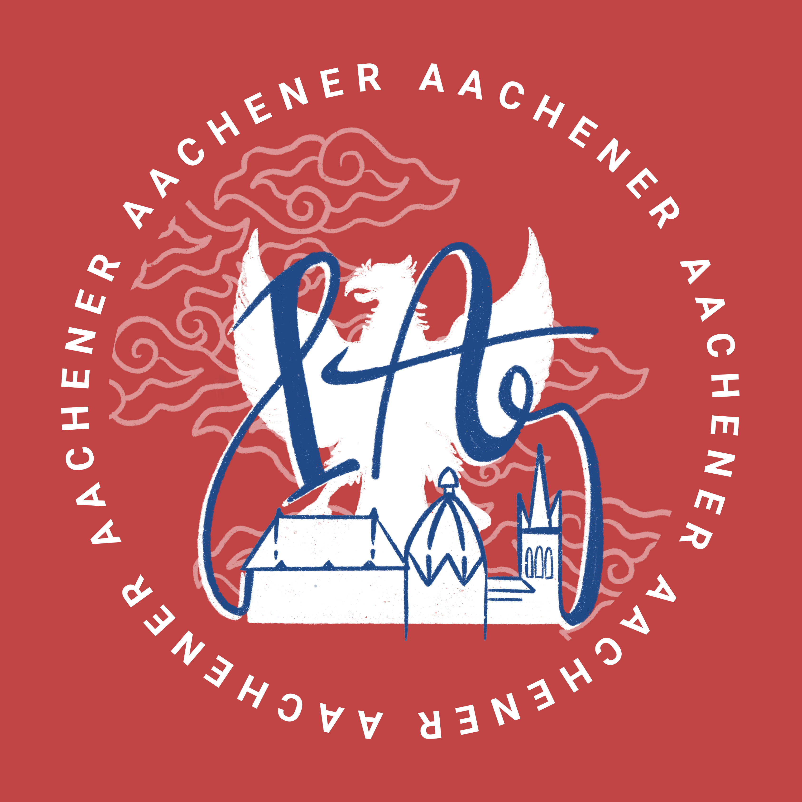
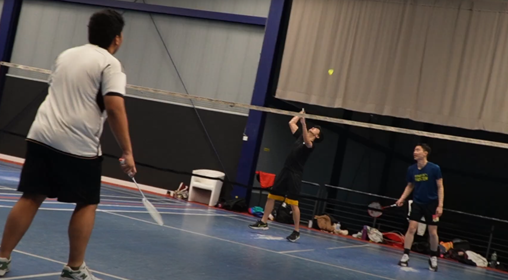
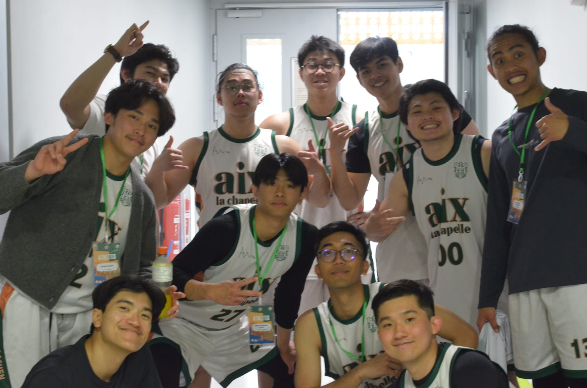
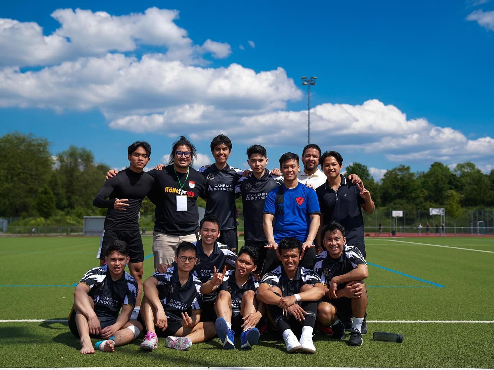
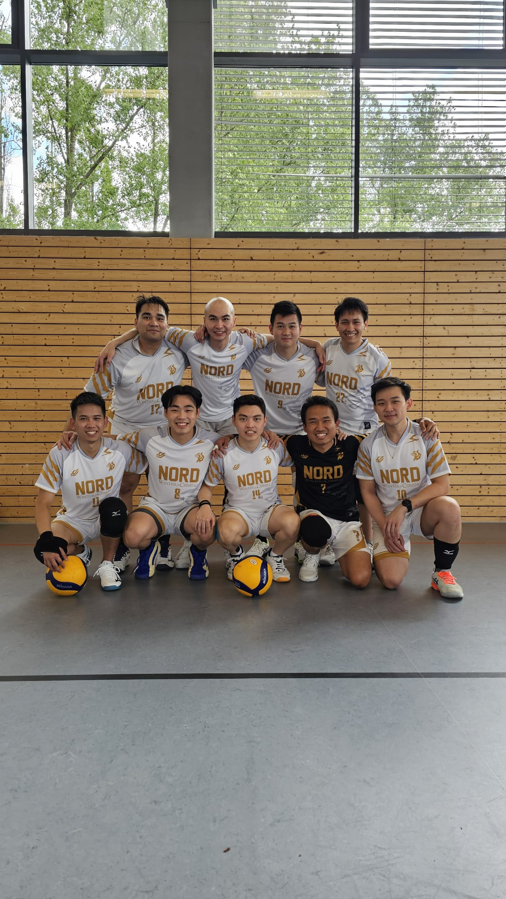
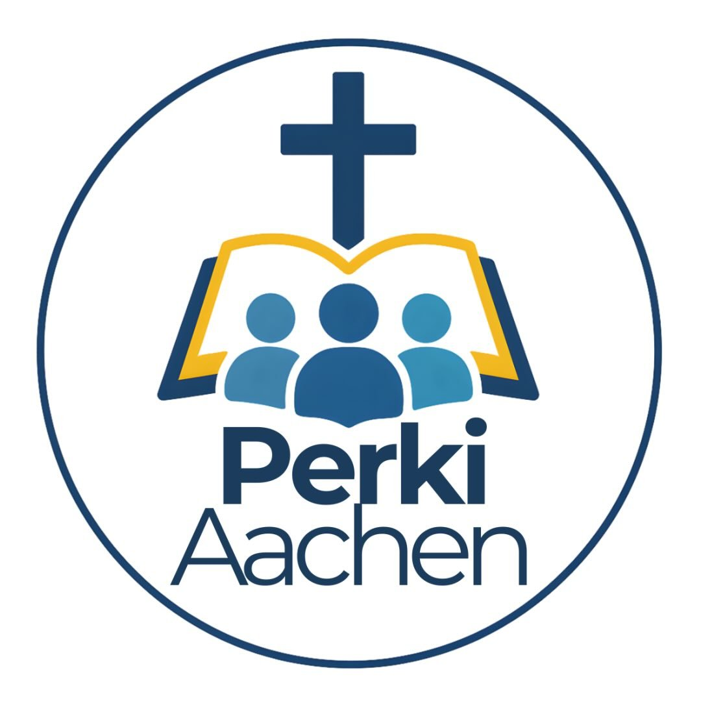
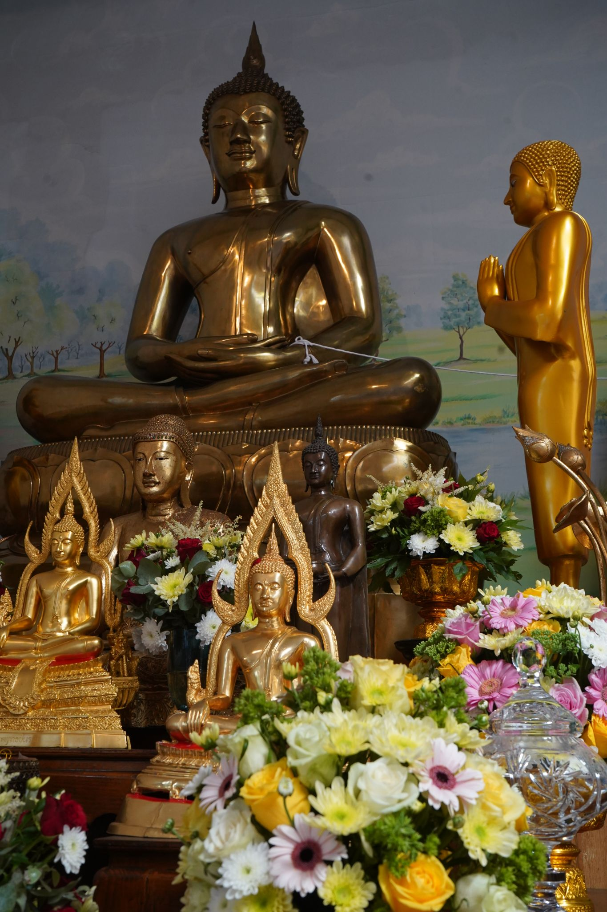
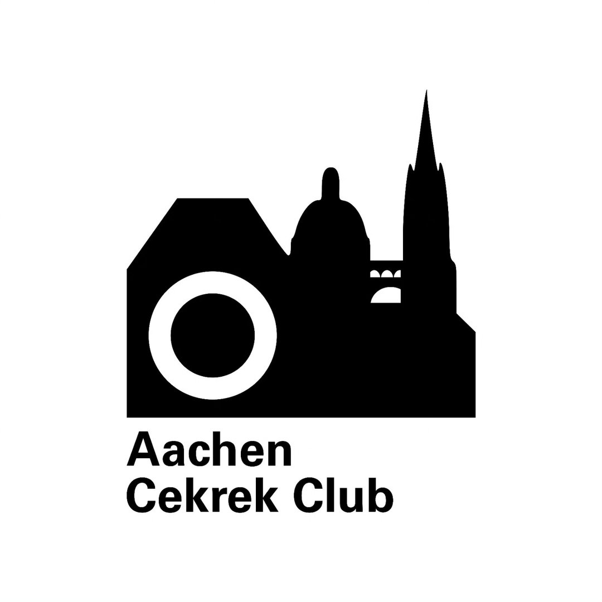

Indo Aachener
Pusat Komunitas
Sebuah komunitas tidak hanya untuk pelajar Indonesia, melainkan juga untuk semua orang Indonesia di Aachen dan sekitarnya. Wadah utama untuk saling terhubung, berbagi informasi, dan menjalin silaturahmi antar warga Indonesia di kota Aachen.
Komunitas Indonesia di Aachen

Badminton
Latihan rutin badminton bareng warga Indo. Lokasi: Hochschulsport / Tivoli.

Basket
Komunitas basket Indonesia di Aachen. Lokasi: Hochschulsport / Scheiben.

Futsal (Indo Aachen FC)
Main futsal bareng! Lokasi: Kennedy / Scheiben / Kelmis. Instagram: @indoaachenfc

Voli (Nord Volleyball)
Latihan voli seru-seruan. Lokasi: Vaals. Instagram: @nordvolleyball

Keluarga Islam Aachen (KIA)
Wadah untuk memenuhi kebutuhan rohani muslim Indonesia di Aachen. Program rutin: Pengajian Bulanan, TPA, Sommer Grillen, dan Rihlah.

KMKI Aachen
Keluarga Mahasiswa Katolik Indonesia. Mengadakan misa Bahasa Indonesia setiap bulan (minggu ke-3), spielabend, dan acara kekeluargaan lainnya.

PERKI Aachen
Persekutuan Kristen Indonesia Aachen. Mendasarkan kepercayaan pada Alkitab, mendukung pertumbuhan rohani melalui pertemuan rutin dan persekutuan doa.

Kalyanamitta (KBA)
Komunitas mahasiswa/i Buddhis di Aachen. Sharing info acara vihara, meetup rutin, dan kegiatan kebersamaan lainnya.

Aachen Cekrek
Komunitas fotografi dan multimedia. Buat yang hobi foto, mau belajar motret, atau mau jadi model foto. Bebas pakai kamera atau HP.

KoKuchen
Komunitas Kucing Aachen dan Sekitarnya. Tempat berbagi foto kucing, tanya jawab seputar kucing, dan rekomendasi vet.

Suara Kami
Pergerakan pemuda non-profit dibidang sosial politik. Membangun kesadaran politik dan mendorong pemikiran kritis kaum muda.

Arbeitskreis Indonesia
Jembatan penyambung masyarakat Jerman dan Indonesia. Memperkenalkan perkembangan sosial, politik, dan budaya Indonesia.